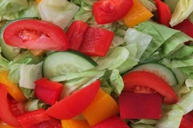
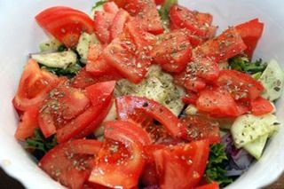

Шаг 1: подготавливаем ингредиенты.

Для начала подготавливаем все ингредиенты. Промываем под холодной проточной водой огурец, помидор и листья свежего салата. Затем сушим овощи бумажными кухонными полотенцами, а с зелени стряхиваем излишки жидкости.
Отрезаем кончики огурца с обеих сторон, а у помидора - место, на котором крепилась плодоножка. Дальше по очереди выкладываем их на разделочную доску и измельчаем: пластами, кольцами, четвертинками, полукольцами, кубикам или так, как больше нравится.
Форма нарезки непринципиальна, но желательно, чтобы размер кусочков не превышал 3 сантиметра, а толщина 1 – 1,5 сантиметра, тогда овощи пустят много сока и равномерно пропитаются заправкой.
Когда вопрос с нарезкой решился, перекладываем измельченные продукты в миску. Туда же нарываем чистыми руками салатные листья.
После этого при помощи консервного ключа открываем баночку с кальмаром и скидываем ее содержимое в дуршлаг. Оставляем в нем морепродукт на 5 – 7 минут, чтобы стекли остатки жидкости, и дальше действуем по желанию.
Если это кольца кальмаров, можно оставить их целыми или нашинковать тонкой соломкой, но иногда их консервируют уже в нарезанном виде, тогда выбора просто нет. Перекладываем подготовленный морепродукт в миску с измельченными овощами и приступаем к следующему шагу.
Шаг 2: готовим салат с кальмаром.

В миску с кальмарами, овощами, а также салатными листьями добавляем по вкусу соль и черный молотый перец. Тщательно перемешиваем все до однородной консистенции, заправляем свежевыжатым лимонным соком и растительным маслом. Снова смешиваем все составляющие салата до однородности, перекладываем готовое блюдо в салатницу и подаем к столу.